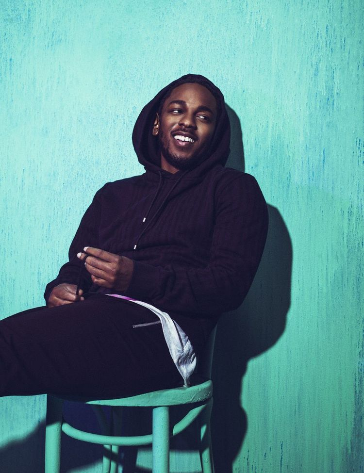

본명은 켄드릭 라마 더크워스(Kendrick Lamar Duckworth). 1987년 6월 17일생이며 미국 캘리포니아 주 로스앤젤레스 군 콤프턴 출신이다. 인터스코프 레코드, 애프터매스 레코드, T.D.E에 소속되어 있고 힙합그룹 Black Hippy에도 소속되어있다.
Snoop Dogg, The Game, Kurupt, DJ Quik, E-40같은 서부 힙합의 거물들에게 인정과 지원을 받고있으며, 스눕에게 서부 힙합의 왕이라는 칭호와 횃불을 이어받으며 진정한 서부 힙합의 대표로서 활동하고 있다.
데뷔 전, 켄드릭 라마는 16살의 나이에 'Youngest Head Nigga In Charge' 라는 이름의 믹스테잎으로 데뷔를 했다. 이 믹스테잎은 T.D.E 사장인 Punch에게 전해졌고 Punch는 켄드릭 라마에게 연락해 자신의 레이블에 들어오기를 권유한다. 그 당시의 그의 이름은 K-Dot이었으며 지금과는 많이 다른 평범한 스타일의 래핑을 구사했다. 2005년에는 'Training Day' 라는 믹스테잎을 발표했으며, 2006년에는 같은 컴튼 출신 래퍼이자 서부 갱스터 랩의 중심 인물인 The Game의 트랙에 피처링을 하며 차근차근 인지도를 알렸다. 이 당시 피처링한 곡은 'The Cypha' 와 'Cali Niggaz'.
2007년에는 바로 옆에 있는 학교에 다니며 앞으로 자신의 가장 가까운 형제가 될 래퍼인 Jay Rock을 만나며 믹스테잎 'NO SLEEP TILL' NYC' 를 발표한다. 2009년에는 'C4'라는 믹스테잎을 발매하고 Black Hippy를 결성하였다. 또한 K-Dot이었던 자신의 랩 네임을 자신의 본명인 Kendrick Lamar로 바꾸고 'Kendrick Lamar EP' 를 릴리즈한다. 2010년에는 믹스 테잎 'Overly Dedicated' 를 발매했다. 이 믹스 테잎으로 켄드릭은 주목을 받기 시작한다.
2011년에는 자신의 첫 스튜디오 데뷔 앨범이자 첫 정규 1집인 'Section.80' 를 발표했다. 상업적으로 눈에 띄는 큰 성적은 거두지 못했지만, 힙합 씬에 상당한 반향을 일으켰다는 평이 많다. 발매 이후 켄드릭은 많은 투어를 다니기 시작한다. 투어를 위해 돌아다니는 많은 시간동안 자신이 어렸을 때부터 생각해온 컴튼에서의 암울했던 생활을 주제로 한 앨범을 구상하기 시작한다. 그리고, 2012년 켄드릭 라마는 이 구상을 'good kid, m.A.A.d city'의 발매로 실현함으로써 인생의 전환점을 맞는다.
good kid, m.A.A.d city 는 평론가들에게 제2의 Illmatic이라는 찬사를 받으며 입소문을 통해 널리 알려졌고 빌보드 앨범 차트 6위, US TOP 100 1위, US RAP ALBUM 1위, 빌보드 TOP 200 2위, 빌보드 R&B 2위를 차지했으며 영국, 프랑스, 벨기에 등의 유럽 국가나 브라질같은 남미 쪽에서도 좋은 반응을 보이며 전세계적으로 140만장 이상의 판매고를 올렸다. 이 앨범은 그래미 어워드에도 2년동안 7번이나 노미네이트됐지만, 맥클모어 & 라이언 루이스에게 밀려 결국 무관에 그쳤다. 그래미 어워드에는 많은 비난이 쏟아졌으며. 여러 요인들이 겹쳐 2015년 그래미 시상식에 켄드릭 라마는 싱글 "i"로 수상했지만 그래미의 높으신 분들을 비꼬는 의미로 참여하지 않았다.
Big Sean의 Control에 Jay Electronica와 함께 피처링으로 참여하여 "Who's the best MC? Kendrick, Jigga and Nas, Eminem, Andre 3000, the rest of y'all New niggas just new niggas, don't get involved"라는 라인으로 "최고의 래퍼가 누구인가?" 라는 힙합계 최고의 떡밥에 다시 불을 붙였으며 이어지는 라인에서 랩 좀 한다는 래퍼들의 이름을 거론하며 상당히 큰 파장을 일으켰다.
변질될대로 변질된 힙합씬에서 새로운 바람을 불어넣고 싶다는 켄드릭 라마의 의도는 성공적으로 작용했고 많은 래퍼들이 응답했다. 몇몇은 자신이 거론되지 못함에 켄드릭을 디스했고 몇몇은 의외로 켄드릭에게 존경을 보내며 훈훈한 분위기를 만들었다.
2015년 3월 16일에 To Pimp a Butterfly를 발매했다. To Pimp a Butterfly에 대한 평론가들의 반응은 또 다시 폭발적이었고, 힙합계 뿐만 아니라 음악계 전체에서 가장 핫한 아티스트로 꼽히게 되었다.
Metacritic 96 점이라는 엄청난 점수를 얻고 , 미국 내에서 피치포크와 함께 양대 음악 잡지라 불리는 롤링 스톤에서 올해 최고의 앨범 1위로 선정하는 등 평론가들의 찬사를 한몸에 받은 올한해의 앨범이자 2010년대 최고의 앨범중 하나로 평가되고 있다.
이후, 2017년에 뜬금없이 The Heart 4라는 트랙을 발매하여 큰 화제를 몰았고 이후 수록곡 'HUMBLE.'을 뮤직비디오와 함께 공개했다.이곡은 래퍼 빅 션을 디스한듯한 가사로[16]상당한 주목을 받았다. 이후 이곡은 2017년 빌보드 핫 100 4월 22일 주 차트에 첫 주 2위로 데뷔했다. 그리고 5월 6일, 12주간 1위를 한 에드 쉬런의 Shape Of You를 제치고 1위를 성공했다.
발매일은 2017년 4월 14일로, 출시일이 며칠 남지 않은 상태에서 앨범 제목이 DAMN.으로 확정되었다. 이후 무사히 발매. 총 14곡으로 이뤄져 있으며, 특이한 점은 'DAMN.'이라는 앨범의 제목에 걸맞게 (또 K-Dot이라는 본인의 랩 네임답게) 트랙들의 제목이 모두 '대문자+마침표(.)' 형식으로 이뤄져있다.
메타크리틱 점수는 현재 95점으로 전작과 1점 차이가 나는 점수이다. 2017년 5월 24일 기준 판매량은 약 70만장 이상.
2018년에는 월드와이트 판매량 200만장을 넘어섰다.
타이틀곡인 HUMBLE.은 무려 2017년 빌보드 연간 차트 4위에 오르는 기염을 토했다. 음악성에 비해 상업성이 다소 아쉬웠던 전작에 비해 상업적으로도 성공하면서 커리어의 정점을 찍었다.
전작처럼 대부분의 매거진에서 올해의 앨범 1위를 차지하고 있다. 빌보드, 피치포크, 롤링 스톤, 팝매터스 같은 유명 매거진들이 올해의 앨범으로 DAMN.을 꼽았으며 수상에 실패했던 전작과 달리 이번에는 BET Hip Hop Awards 에서 최고의 앨범상을 수상했다.
그래미 앨범주요부문 후보 전부에 올랐으며 로드, 브루노 마스, 제이지 등 거물 아티스트와 경쟁을 했는데 60회 그래미어워드에서는 4개의 부문에서 수상하는 쾌거를 이루게된다.
그리고 현지시간 2018년 4월 16일 무려 퓰리처상을 수상한다.
COPYRIGHT © 2020 TOP DAWG ENT.